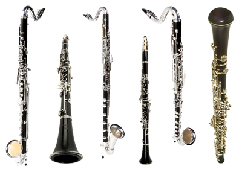
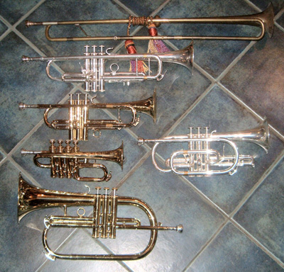
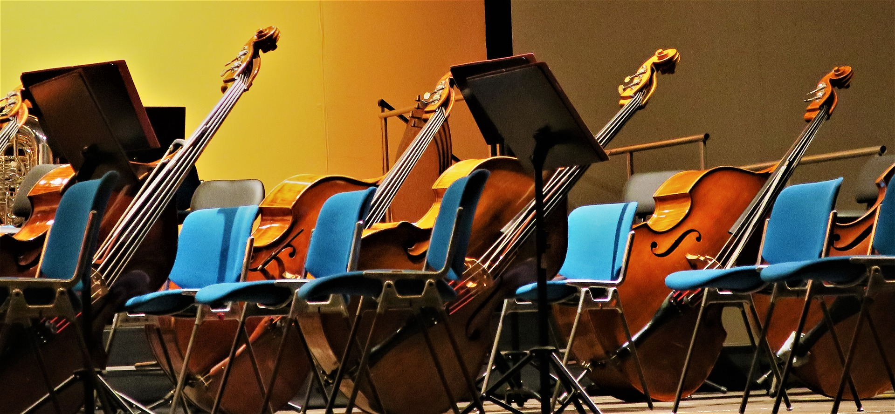
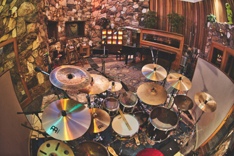

Woodwind instruments used to all be made out of wood, hence the name woodwinds. Nowadays, that has changed, but the idea of them has not. Woodwinds are typically these tube like instruments that you play by blowing air into its mouthpiece. And you can change the pitch by covering the different holes on them. Many woodwinds need a thin piece of wood called a reed to blow on and have it vibrate to create a sound. Many common woodwinds include clarinets, saxophones, oboes, bassoons, and flutes.

Brass instruments, as the name suggests are typically made out of brass and have valves or slides to help change pitch. Brass instruments are a group of instruments known as lip vibrated instruments. This means that players vibrate their lips against a cup mouthpiece to produce a sound out of the bell shape ends of the instruments. And with the valves or slides, how the player vibrates their lips can affect the sound. Common brass instruments include the trumpet, french horn, trombone, baritone, and tuba.

Most string instruments are made out of wood, but they arre string instruments because of the strings on them that actually help make the sound for the hollow, wooden body. Strings are normally played with a bow or can be plucked to make noises. And different hand positions for holding the strings of the instrument changes the note being played. Common string instruments include violin, viola, cello, bass, guitar, and harp.

Percussion instruments are any instruments that can be played by striking or scraping them. And because of that, percussion is an incredibly broad category with a lot of variety. Some percussion instruments don't care about pitch as much or just stay the same pitch, like a drum while instruments like chimes have a wide variety of notes to play. Many common percussion instruments include piano, xylophone, drums, triangle, chimes, and gong.